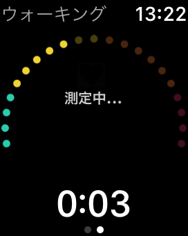

「測定中...」の表示のまま、心拍数や運動強度が表示されない場合は、心拍数が取得できない状態です。
Apple「ヘルスケア」アプリで、心拍数の読み出しが許可になっているかを確認します。
Apple ヘルスケアへの権限を確認する
Apple「Watch」 アプリ > マイウォッチ > 一般 に、 「ワークアウト省電力モード」 の設定があります。
省電力モードがONだと心拍数が測定されません。OFFにしてお試しください。
（外部心拍モニターを利用時は除く）
省電力モードをOFFにするとApple Watchのバッテリーの消費が増加することにご注意ください。
長時間のワークアウトを行う場合でバッテリー消費が気になる場合には、外部心拍モニターの導入を検討してください。
OFFの場合は、Zonesアプリではずっと「測定中...」か、数分単位で1回更新されるかどうか という状態になります。
スクロールダウンして、距離や消費カロリーを表示した画面でご利用ください。
また、心拍数が取得できないと、正確な消費カロリーの算出も難しくなることにもご注意ください。
（消費カロリーの算出はApple WatchのOSが行っています）
ヘルスケアアプリで、心拍数のデータが記録されているかを確認します。
Apple Watchで一時的に心拍数が測定できない状態の場合、Appleのアプリを利用することにより改善する場合があります。
Apple Watchで、「ワークアウト」アプリや、「心拍数」アプリを使って心拍数が測定できていることを確認してください。
測定中の心拍数は、Apple Watchのヘルスケア(HealthKit)に登録された心拍数を参照しています。
そのため、外部心拍モニターはBluetoothでApple Watchに接続している必要があります。
心拍数の測り方をご確認ください。